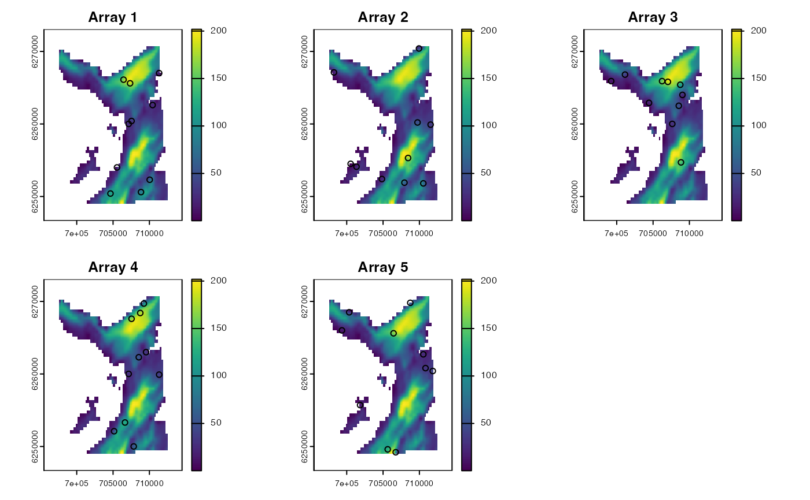
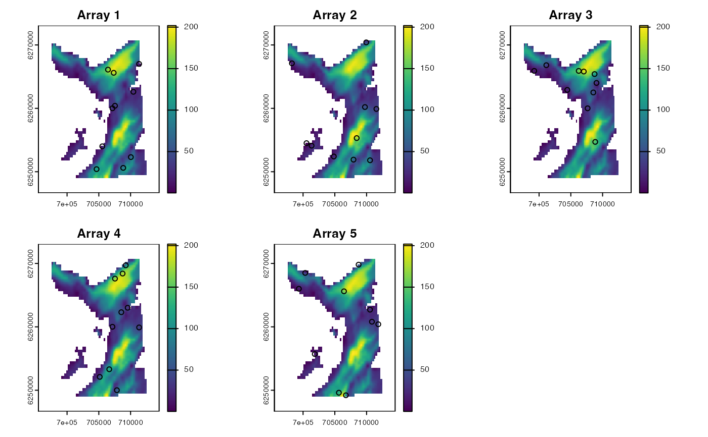

Simulate acoustic arrays (i.e., networks of acoustic receiver(s)) on a grid.
Usage
sim_array(
.map,
.timeline,
.arrangement = "random",
.n_receiver = 10L,
...,
.receiver_alpha = 4,
.receiver_beta = -0.01,
.receiver_gamma = 750,
.n_array = 1L,
.plot = TRUE,
.one_page = FALSE
)Arguments
- .map
A
terra::SpatRasterthat defines the region of interest (seeglossary). Here,.mapis used to:Sample receiver locations in appropriate (non
NA) regions, viaterra::spatSample();
- .timeline
A
POSIXctvector of regularly spaced time stamps that defines the timeline for the simulation. Here,.timelineis used to:Define receiver deployment periods (that is,
receiver_startandreceiver_endcolumns in the outputdata.table::data.table). Receiver deployment periods are defined bymin(.timeline)andmax(.timeline)and constant for all receivers. (These columns are added solely for use in downstream functions.)
- .arrangement, .n_receiver, ...
Arguments passed to
terra::spatSample(), used to sample receiver locations..arrangementis acharacterthat defines the receiver arrangement (passed to themethodargument)..n_receiveris anintegerthat defines the number of receivers to simulate (passed to thesizeargument)....Additional arguments, passed toterra::spatSample(), excludingx,size,method,replace,na.rm,xy,cellsandvalues.
- .receiver_alpha, .receiver_beta, .receiver_gamma
(optional)
Numericconstants for the default detection probability parameters for inclusion in the outputdata.table::data.table. (These columns are added solely for use in downstream functions, such assim_observations().)Single inputs are expected to these arguments, which are constant across all receivers.
- .n_array
An
integerthat defines the number of array designs to simulate with the aforementioned parameters.- .plot
A
logicalvariable that defines whether or not to plot simulated arrays.- .one_page
If
.plot = TRUE,.one_pageis alogicalvariable that defines whether or not to produce plots on a single page.
Value
The function returns a data.table::data.table with the following columns:
array_id—anintegervector of array IDs,receiver_id—anintegervector of receiver IDs;receiver_start,receiver_end—POSIXctvectors that define receiver deployment periods;receiver_xandreceiver_y—numericvectors that defines receiver coordinates;receiver_alpha,receiver_beta,receiver_gamma—numericvectors of detection probability parameters, if defined;
Details
This function replaces flapper::sim_array().
On Linux, this function cannot be used within a Julia session.
See also
sim_*functions implement de novo simulation of movements and observations:sim_path_walk()simulates movement path(s) (viaModelMove);sim_array()simulates acoustic array(s);sim_observations()simulates observations (viaModelObs);
Examples
if (patter_run(.julia = FALSE, .geospatial = TRUE)) {
#### Define simulation arguments
map <- dat_gebco()
timeline <- seq(as.POSIXct("2016-01-01", tz = "UTC"),
length.out = 1000L, by = "2 mins")
#### Example (1): The default implementation
array <- sim_array(.map = map, .timeline = timeline)
head(array)
#### Example (2): Customise receiver placement/number
array <- sim_array(.map = map, .timeline = timeline,
.arrangement = "regular", .n_receiver = 100L)
#### Example (3): Customise detection probability parameters
# (This information is used by the default downstream functions)
array <- sim_array(.map = map, .timeline = timeline,
.receiver_alpha = 4.5,
.receiver_beta = -0.02,
.receiver_gamma = 500)
#### Example (4): Control the plot(s)
sim_array(.map = map, .timeline = timeline,
.plot = FALSE)
sim_array(.map = map, .timeline = timeline,
.n_array = 5L, .plot = TRUE, .one_page = TRUE)
sim_array(.map = map, .timeline = timeline,
.n_array = 5L, .plot = TRUE, .one_page = FALSE)
}

 



 #> array_id receiver_id receiver_start receiver_end receiver_x
#> <int> <int> <POSc> <POSc> <num>
#> 1: 1 1 2016-01-01 2016-01-02 09:18:00 708742.1
#> 2: 1 2 2016-01-01 2016-01-02 09:18:00 704942.1
#> 3: 1 3 2016-01-01 2016-01-02 09:18:00 711042.1
#> 4: 1 4 2016-01-01 2016-01-02 09:18:00 710142.1
#> 5: 1 5 2016-01-01 2016-01-02 09:18:00 708042.1
#> 6: 1 6 2016-01-01 2016-01-02 09:18:00 704642.1
#> 7: 1 7 2016-01-01 2016-01-02 09:18:00 707542.1
#> 8: 1 8 2016-01-01 2016-01-02 09:18:00 707642.1
#> 9: 1 9 2016-01-01 2016-01-02 09:18:00 703642.1
#> 10: 1 10 2016-01-01 2016-01-02 09:18:00 699842.1
#> 11: 2 1 2016-01-01 2016-01-02 09:18:00 707842.1
#> 12: 2 2 2016-01-01 2016-01-02 09:18:00 709942.1
#> 13: 2 3 2016-01-01 2016-01-02 09:18:00 709142.1
#> 14: 2 4 2016-01-01 2016-01-02 09:18:00 711342.1
#> 15: 2 5 2016-01-01 2016-01-02 09:18:00 702342.1
#> 16: 2 6 2016-01-01 2016-01-02 09:18:00 706242.1
#> 17: 2 7 2016-01-01 2016-01-02 09:18:00 708442.1
#> 18: 2 8 2016-01-01 2016-01-02 09:18:00 701842.1
#> 19: 2 9 2016-01-01 2016-01-02 09:18:00 710942.1
#> 20: 2 10 2016-01-01 2016-01-02 09:18:00 704842.1
#> 21: 3 1 2016-01-01 2016-01-02 09:18:00 711842.1
#> 22: 3 2 2016-01-01 2016-01-02 09:18:00 702442.1
#> 23: 3 3 2016-01-01 2016-01-02 09:18:00 710142.1
#> 24: 3 4 2016-01-01 2016-01-02 09:18:00 708742.1
#> 25: 3 5 2016-01-01 2016-01-02 09:18:00 709542.1
#> 26: 3 6 2016-01-01 2016-01-02 09:18:00 701142.1
#> 27: 3 7 2016-01-01 2016-01-02 09:18:00 708642.1
#> 28: 3 8 2016-01-01 2016-01-02 09:18:00 707042.1
#> 29: 3 9 2016-01-01 2016-01-02 09:18:00 711042.1
#> 30: 3 10 2016-01-01 2016-01-02 09:18:00 706542.1
#> 31: 4 1 2016-01-01 2016-01-02 09:18:00 709242.1
#> 32: 4 2 2016-01-01 2016-01-02 09:18:00 701942.1
#> 33: 4 3 2016-01-01 2016-01-02 09:18:00 710342.1
#> 34: 4 4 2016-01-01 2016-01-02 09:18:00 708342.1
#> 35: 4 5 2016-01-01 2016-01-02 09:18:00 706342.1
#> 36: 4 6 2016-01-01 2016-01-02 09:18:00 702542.1
#> 37: 4 7 2016-01-01 2016-01-02 09:18:00 708242.1
#> 38: 4 8 2016-01-01 2016-01-02 09:18:00 708242.1
#> 39: 4 9 2016-01-01 2016-01-02 09:18:00 708842.1
#> 40: 4 10 2016-01-01 2016-01-02 09:18:00 708842.1
#> 41: 5 1 2016-01-01 2016-01-02 09:18:00 698742.1
#> 42: 5 2 2016-01-01 2016-01-02 09:18:00 709542.1
#> 43: 5 3 2016-01-01 2016-01-02 09:18:00 707442.1
#> 44: 5 4 2016-01-01 2016-01-02 09:18:00 710942.1
#> 45: 5 5 2016-01-01 2016-01-02 09:18:00 709642.1
#> 46: 5 6 2016-01-01 2016-01-02 09:18:00 700542.1
#> 47: 5 7 2016-01-01 2016-01-02 09:18:00 706542.1
#> 48: 5 8 2016-01-01 2016-01-02 09:18:00 711642.1
#> 49: 5 9 2016-01-01 2016-01-02 09:18:00 706542.1
#> 50: 5 10 2016-01-01 2016-01-02 09:18:00 709242.1
#> array_id receiver_id receiver_start receiver_end receiver_x
#> receiver_y receiver_alpha receiver_beta receiver_gamma
#> <num> <num> <num> <num>
#> 1: 6261207 4 -0.01 750
#> 2: 6266507 4 -0.01 750
#> 3: 6249807 4 -0.01 750
#> 4: 6256107 4 -0.01 750
#> 5: 6266407 4 -0.01 750
#> 6: 6253507 4 -0.01 750
#> 7: 6259107 4 -0.01 750
#> 8: 6260607 4 -0.01 750
#> 9: 6263907 4 -0.01 750
#> 10: 6265707 4 -0.01 750
#> 11: 6255307 4 -0.01 750
#> 12: 6258107 4 -0.01 750
#> 13: 6250007 4 -0.01 750
#> 14: 6251607 4 -0.01 750
#> 15: 6265507 4 -0.01 750
#> 16: 6249207 4 -0.01 750
#> 17: 6255907 4 -0.01 750
#> 18: 6266507 4 -0.01 750
#> 19: 6268107 4 -0.01 750
#> 20: 6266307 4 -0.01 750
#> 21: 6257607 4 -0.01 750
#> 22: 6253807 4 -0.01 750
#> 23: 6264207 4 -0.01 750
#> 24: 6251507 4 -0.01 750
#> 25: 6265207 4 -0.01 750
#> 26: 6265507 4 -0.01 750
#> 27: 6258807 4 -0.01 750
#> 28: 6252507 4 -0.01 750
#> 29: 6262407 4 -0.01 750
#> 30: 6263607 4 -0.01 750
#> 31: 6267507 4 -0.01 750
#> 32: 6264707 4 -0.01 750
#> 33: 6261807 4 -0.01 750
#> 34: 6260207 4 -0.01 750
#> 35: 6250407 4 -0.01 750
#> 36: 6249107 4 -0.01 750
#> 37: 6260807 4 -0.01 750
#> 38: 6253207 4 -0.01 750
#> 39: 6251207 4 -0.01 750
#> 40: 6252007 4 -0.01 750
#> 41: 6266407 4 -0.01 750
#> 42: 6251807 4 -0.01 750
#> 43: 6263607 4 -0.01 750
#> 44: 6259607 4 -0.01 750
#> 45: 6270007 4 -0.01 750
#> 46: 6252407 4 -0.01 750
#> 47: 6254907 4 -0.01 750
#> 48: 6259607 4 -0.01 750
#> 49: 6253707 4 -0.01 750
#> 50: 6263607 4 -0.01 750
#> receiver_y receiver_alpha receiver_beta receiver_gamma
#> array_id receiver_id receiver_start receiver_end receiver_x
#> <int> <int> <POSc> <POSc> <num>
#> 1: 1 1 2016-01-01 2016-01-02 09:18:00 708742.1
#> 2: 1 2 2016-01-01 2016-01-02 09:18:00 704942.1
#> 3: 1 3 2016-01-01 2016-01-02 09:18:00 711042.1
#> 4: 1 4 2016-01-01 2016-01-02 09:18:00 710142.1
#> 5: 1 5 2016-01-01 2016-01-02 09:18:00 708042.1
#> 6: 1 6 2016-01-01 2016-01-02 09:18:00 704642.1
#> 7: 1 7 2016-01-01 2016-01-02 09:18:00 707542.1
#> 8: 1 8 2016-01-01 2016-01-02 09:18:00 707642.1
#> 9: 1 9 2016-01-01 2016-01-02 09:18:00 703642.1
#> 10: 1 10 2016-01-01 2016-01-02 09:18:00 699842.1
#> 11: 2 1 2016-01-01 2016-01-02 09:18:00 707842.1
#> 12: 2 2 2016-01-01 2016-01-02 09:18:00 709942.1
#> 13: 2 3 2016-01-01 2016-01-02 09:18:00 709142.1
#> 14: 2 4 2016-01-01 2016-01-02 09:18:00 711342.1
#> 15: 2 5 2016-01-01 2016-01-02 09:18:00 702342.1
#> 16: 2 6 2016-01-01 2016-01-02 09:18:00 706242.1
#> 17: 2 7 2016-01-01 2016-01-02 09:18:00 708442.1
#> 18: 2 8 2016-01-01 2016-01-02 09:18:00 701842.1
#> 19: 2 9 2016-01-01 2016-01-02 09:18:00 710942.1
#> 20: 2 10 2016-01-01 2016-01-02 09:18:00 704842.1
#> 21: 3 1 2016-01-01 2016-01-02 09:18:00 711842.1
#> 22: 3 2 2016-01-01 2016-01-02 09:18:00 702442.1
#> 23: 3 3 2016-01-01 2016-01-02 09:18:00 710142.1
#> 24: 3 4 2016-01-01 2016-01-02 09:18:00 708742.1
#> 25: 3 5 2016-01-01 2016-01-02 09:18:00 709542.1
#> 26: 3 6 2016-01-01 2016-01-02 09:18:00 701142.1
#> 27: 3 7 2016-01-01 2016-01-02 09:18:00 708642.1
#> 28: 3 8 2016-01-01 2016-01-02 09:18:00 707042.1
#> 29: 3 9 2016-01-01 2016-01-02 09:18:00 711042.1
#> 30: 3 10 2016-01-01 2016-01-02 09:18:00 706542.1
#> 31: 4 1 2016-01-01 2016-01-02 09:18:00 709242.1
#> 32: 4 2 2016-01-01 2016-01-02 09:18:00 701942.1
#> 33: 4 3 2016-01-01 2016-01-02 09:18:00 710342.1
#> 34: 4 4 2016-01-01 2016-01-02 09:18:00 708342.1
#> 35: 4 5 2016-01-01 2016-01-02 09:18:00 706342.1
#> 36: 4 6 2016-01-01 2016-01-02 09:18:00 702542.1
#> 37: 4 7 2016-01-01 2016-01-02 09:18:00 708242.1
#> 38: 4 8 2016-01-01 2016-01-02 09:18:00 708242.1
#> 39: 4 9 2016-01-01 2016-01-02 09:18:00 708842.1
#> 40: 4 10 2016-01-01 2016-01-02 09:18:00 708842.1
#> 41: 5 1 2016-01-01 2016-01-02 09:18:00 698742.1
#> 42: 5 2 2016-01-01 2016-01-02 09:18:00 709542.1
#> 43: 5 3 2016-01-01 2016-01-02 09:18:00 707442.1
#> 44: 5 4 2016-01-01 2016-01-02 09:18:00 710942.1
#> 45: 5 5 2016-01-01 2016-01-02 09:18:00 709642.1
#> 46: 5 6 2016-01-01 2016-01-02 09:18:00 700542.1
#> 47: 5 7 2016-01-01 2016-01-02 09:18:00 706542.1
#> 48: 5 8 2016-01-01 2016-01-02 09:18:00 711642.1
#> 49: 5 9 2016-01-01 2016-01-02 09:18:00 706542.1
#> 50: 5 10 2016-01-01 2016-01-02 09:18:00 709242.1
#> array_id receiver_id receiver_start receiver_end receiver_x
#> receiver_y receiver_alpha receiver_beta receiver_gamma
#> <num> <num> <num> <num>
#> 1: 6261207 4 -0.01 750
#> 2: 6266507 4 -0.01 750
#> 3: 6249807 4 -0.01 750
#> 4: 6256107 4 -0.01 750
#> 5: 6266407 4 -0.01 750
#> 6: 6253507 4 -0.01 750
#> 7: 6259107 4 -0.01 750
#> 8: 6260607 4 -0.01 750
#> 9: 6263907 4 -0.01 750
#> 10: 6265707 4 -0.01 750
#> 11: 6255307 4 -0.01 750
#> 12: 6258107 4 -0.01 750
#> 13: 6250007 4 -0.01 750
#> 14: 6251607 4 -0.01 750
#> 15: 6265507 4 -0.01 750
#> 16: 6249207 4 -0.01 750
#> 17: 6255907 4 -0.01 750
#> 18: 6266507 4 -0.01 750
#> 19: 6268107 4 -0.01 750
#> 20: 6266307 4 -0.01 750
#> 21: 6257607 4 -0.01 750
#> 22: 6253807 4 -0.01 750
#> 23: 6264207 4 -0.01 750
#> 24: 6251507 4 -0.01 750
#> 25: 6265207 4 -0.01 750
#> 26: 6265507 4 -0.01 750
#> 27: 6258807 4 -0.01 750
#> 28: 6252507 4 -0.01 750
#> 29: 6262407 4 -0.01 750
#> 30: 6263607 4 -0.01 750
#> 31: 6267507 4 -0.01 750
#> 32: 6264707 4 -0.01 750
#> 33: 6261807 4 -0.01 750
#> 34: 6260207 4 -0.01 750
#> 35: 6250407 4 -0.01 750
#> 36: 6249107 4 -0.01 750
#> 37: 6260807 4 -0.01 750
#> 38: 6253207 4 -0.01 750
#> 39: 6251207 4 -0.01 750
#> 40: 6252007 4 -0.01 750
#> 41: 6266407 4 -0.01 750
#> 42: 6251807 4 -0.01 750
#> 43: 6263607 4 -0.01 750
#> 44: 6259607 4 -0.01 750
#> 45: 6270007 4 -0.01 750
#> 46: 6252407 4 -0.01 750
#> 47: 6254907 4 -0.01 750
#> 48: 6259607 4 -0.01 750
#> 49: 6253707 4 -0.01 750
#> 50: 6263607 4 -0.01 750
#> receiver_y receiver_alpha receiver_beta receiver_gamma